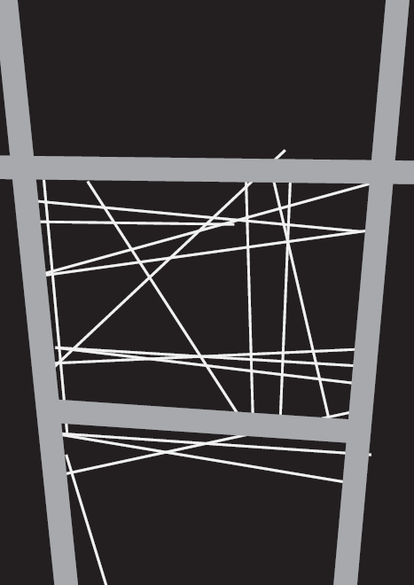
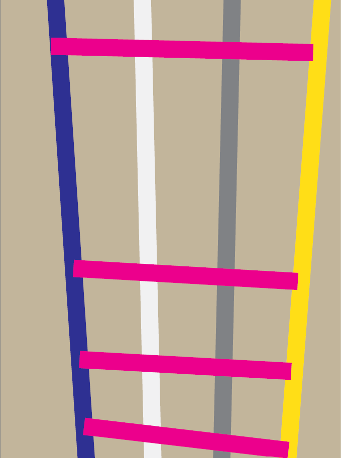
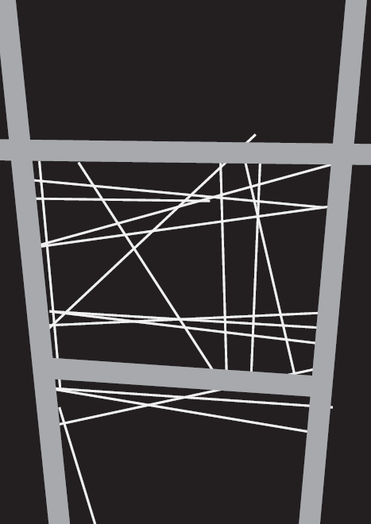
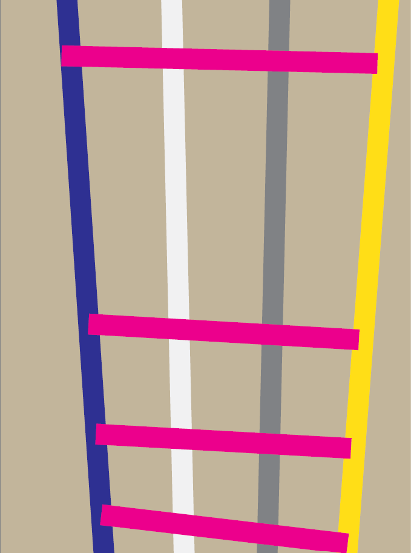

Project 1 – Daily Poster Series “Rualiious”
14 daily posters built around a consistent cherry motif. Each poster explores a different visual direction while keeping the same format, theme, and conceptual framework.
Reflection
Project 1 was the first time I had to design on a strict daily schedule, and it ended up teaching me more about discipline than anything else. Creating something new every day forced me to let go of overthinking and just make decisions, even when I wasn’t feeling creative. I experimented a lot with colors, typography, illustration styles, and compositions, and started noticing what I naturally gravitated toward.
Some posters came out cleaner and more intentional, while others felt chaotic or unresolved, but the mix helped me figure out which directions were worth pursuing. By the end, I was more comfortable taking risks, trusting my eye, and committing to an idea instead of restarting over and over. I also learned how setting rules for myself (format, theme, and motifs) actually made the creative part easier.

 


